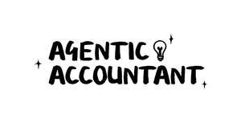

Trade Mark Journal No.2026/007 13 February 2026
UK00004320600 7 January 2026 (9,35,36,42)
Mark 1
Mark 2

- Class 9
- Artificial intelligence software; Artificial intelligence software for analysis; Interactive software based on artificial intelligence; Artificial intelligence and machine learning software; Computer software applications; Application software; Downloadable mobile applications; Computer programs for accessing and using the internet; Computer software downloaded from the internet; Data recorded electronically from the internet; Encoded debit cards; Magnetically encoded debit cards; Credit cards; Encoded credit cards; Magnetic credit cards; Electronic databases; Computer software for producing financial models; recording discs; compact discs, DVDs and other digital recording media; Computer software and computer programs (downloadable/recorded computer software); Downloadable electronic publications; Computer hardware and software comprising a digital wallet that stores customer account information to access coupons, vouchers, voucher codes and rebates at retailers and to obtain loyalty or monetary rewards that can be credited to their accounts; Software application for use in connection with contactless payment terminals; Cards encoded with security features for authentication purposes; Charge cards; Credit cards; Debit cards.
- Class 35
- Advertising; Business administration; Business administration services; Human resources management; Serving as a human resources department for others; Business office services; Business invoicing services; Business management services; Business information for enterprises; Operational business assistance to enterprises; Commercial information agencies; Presentation of goods on communication media for retail purposes; Marketing consulting services; Tracking, analysing, forecasting and reporting cardholder purchase behaviour; Promoting the sale of the goods and services of others by means of rewards and incentives generated in connection with the use of credit, debit and payment cards; Business administration of loyalty and rewards programs.
- Class 36
- Financial services; Banking services; Card accessed banking services; Credit cards services; Issuing credit cards; Debit card services; Bank card, credit card and debit card services; Personal finance services; Bill payment services; Business banking services; Computerised financial services; Monetary affairs; Financial consultancy; Financial information; Financial services, namely, banking, credit card services, debit card services, charge card services, pre-paid card services offered through cards with stored value, electronic credit and debit transactions, bill payment and presentment services, cash disbursement, check verification, check cashing and deposit access services, transaction authorization and settlement services, transaction reconciliation, cash management, consolidated funds settlement, consolidated dispute processing; Financial information with respect to data repository and client profile information services; Financial analysis and consultation; Banking and credit services.
- Class 42
- Artificial intelligence consultancy; Platforms for artificial intelligence as software as a service [saas]; Software as a service [saas] featuring computer software platforms for artificial intelligence; Providing temporary use of online non-downloadable computer software; Providing temporary use of online non-downloadable computer software applications; Providing temporary use of online non- downloadable application software; Providing temporary use of online non- downloadable computer programs for accessing and using the internet; Hosting of platforms on the internet; Development of computer platforms; Platform as a Service [PaaS]; Software as a service [SaaS]; Programming of software for Internet platforms; Application service provider services; Hosting of mobile applications; Development of computer software application solutions; Hosting of computerized data, files, applications and information; Providing temporary use of web-based applications; Hosting computer software applications for others.
Absolutely No Nonsense Admin Ltd
Representative: Sheridans Solicitors LLP